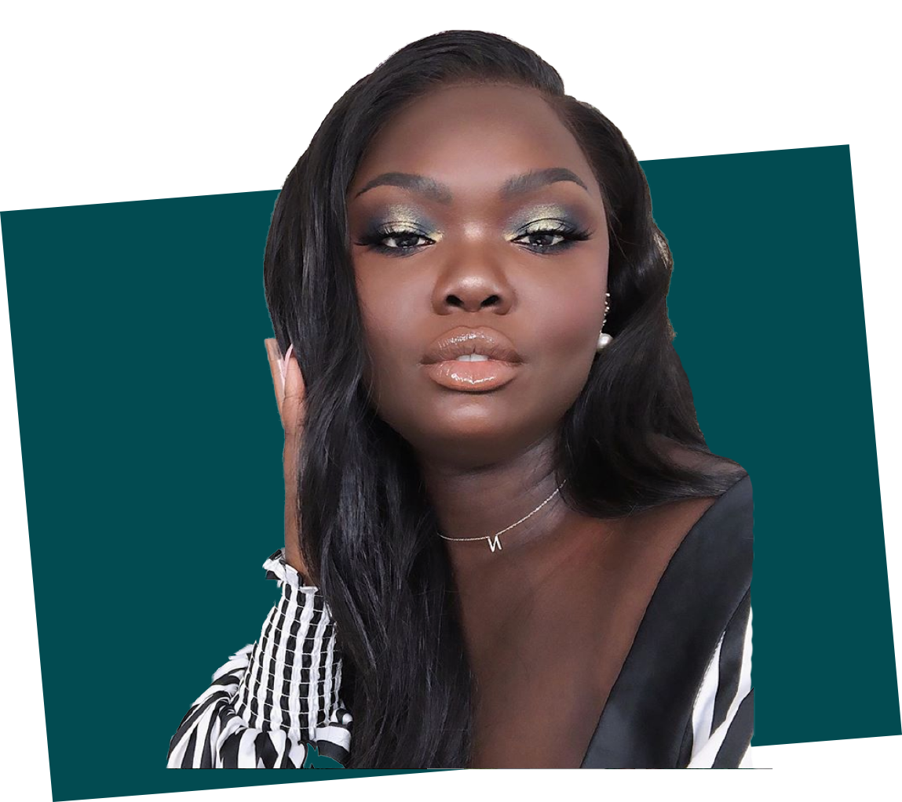
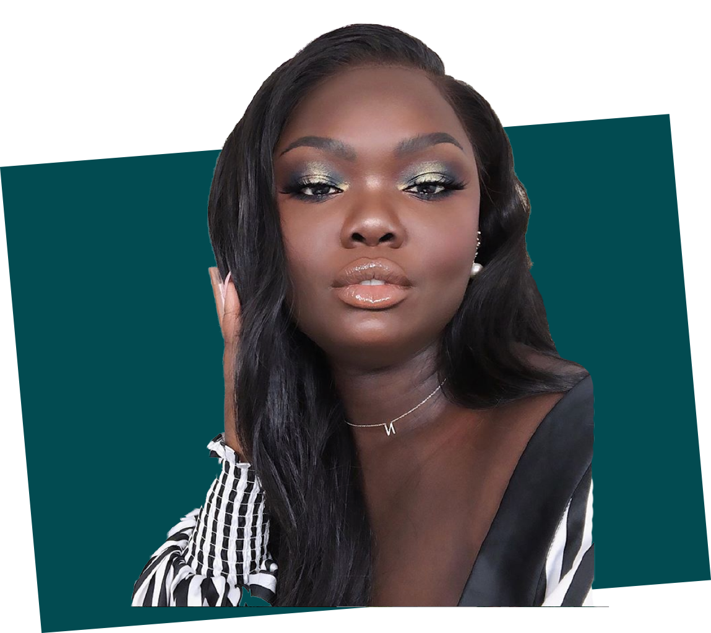
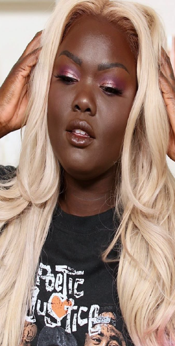

When Kim Kardashian launched her first-ever contour kit last month in a shade called Deep Dark, Nyma Tang was skeptical. She wasn't doubting Kim Kardashian. In fact, she respects her. The 26-year-old beauty vlogger, originally from South Sudan, was more concerned about the Deep Dark shade working on her skin tone because in her opinion contour kits tend to completely disregard her.
Society was telling me that I did not fit the standard of beauty and that was really difficult as a young woman. Even so, a part of me did always feel beautiful. It was just that the outside world trying to tell me that I wasn’t.
From her home in Dallas, Texas, Tang posts videos of herself trying out the deepest shades of makeup on the market in a series aptly named "The Darkest Shade," Revelist reports. It's literally the importance of inclusivity for shade ranges in action. Tang has put popular products like Tarte's cult-favorite Shape Tape and the Anastasia Beverly Hills Foundation Stick to the test. " 'The Darkest Shade' series was inspired by going to different makeup counters and not being able to readily find makeup in my shade," Tang tells Allure. "The reason why the series is called 'The Darkest Shade' is because if a company happens to carry a foundation and other makeup products that work for me, it's usually the darkest shade they carry."
Tang is well-acquainted with the shades from the most popular cosmetics companies and how they work on her. She had a strong feeling that Kardashian's Deep Dark wouldn't work on her skin. (Spoiler alert: Tang was right.) She still purchased the kit and tried it in order to bring awareness to the oversight of deeper skin tones when it comes to contouring. She says she has yet to find a kit that works for her and ends up using eye shadow instead.
"Showing what the darkest shades look like on my skin tone is important because there aren't a lot of people with my complexion in mainstream media or on YouTube," Tang says about all her videos, not only her latest. "People tend to not know what to do with my complexion. Also, my 'Darkest Shade' series can be used as a reference list of different cosmetic companies that cater to deeper skin tones."
As for the video she posted on July 11, "I was compelled to do this not only because a lot of you guys wanted to see it, but because I felt like if I didn't do it then the darker side of the spectrum is just going to keep going unnoticed, especially when it comes to contouring," Tang explains. "Whether or not this product works, I hope companies realize that you have to include everybody." In less than a week, the video has been viewed almost a million times.
Right now, the beauty industry has been stuck in this stage where they only fix the foundations and concealers and that’s it. They’re not realizing that you still need to work on bronzers and contours.
The message that rings true in this video (and in Nyma Tang's entire series) is that deeper skin tones are underrepresented in the beauty industry. "This struggle not only exists with the deeper side of the spectrum but also with the paler side, as well," she points out. "I'm also trying to make people aware that there is a market for the extreme sides of the spectrum. Beauty should be inclusive, no matter your skin tone." Tang does note, however, that the industry is "slowly evolving" and that finding makeup that fits her is becoming less difficult. "I'm excited for the future of makeup," she says.
Next article: